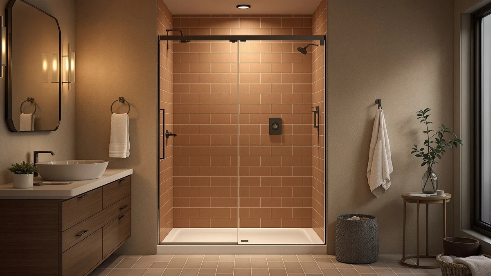

EASYWORC 36 42" W Review (2026): Worth It?
Prices and picks verified as of October 2026. Independent, reader-supported reviews.


Quick Answer
The EASYWORC 36-42" W x 72" H is a $396.89 sliding shower door with an adjustable frame that fits openings anywhere from 36 to 42 inches wide, so you don't need an exact measurement match to install it. It costs more than the three alternatives below, but none of those fit the same width range.
Our pick: EASYWORC 36-42" W x 72" — $396.89 Check Price on Amazon
Bottom line: our top pick is the EASYWORC 36-42" W x 72" H Semi Frameless Pivot Shower Door at $396.89.
Things to Know Before You Buy
- The EASYWORC's adjustable frame fits openings from 36 to 42 inches wide, so you get a 6-inch margin instead of needing an exact match.
- Height is fixed at 72 inches. If your stall is taller or shorter, this door won't seal properly no matter how well the width fits.
- At $396.89, it's the priciest door in this comparison, and the width range is the main reason for the gap.
- The listing doesn't publish a glass thickness or frame finish, so confirm those details with the seller if they matter to you.
- No published rating or review count yet, so you're weighing the specs rather than a track record of verified owner feedback.
This easyworc 36 42" w review compares the $396.89 EASYWORC 36-42" W x 72" H sliding shower door against three alternatives on price, size range and fit. The EASYWORC's defining feature is its adjustable-width frame, engineered to fit any opening between 36 and 42 inches rather than a single fixed measurement. That 6-inch margin matters if your alcove framing is slightly out of square, a common issue in older bathrooms where a fixed-width door can leave a gap on one side.
We wrote this EASYWORC 36-42 inch W review because shoppers searching a 36 to 42 inch opening often assume every listing in that range works the same way. It doesn't. The EASYWORC lists at $396.89, the highest price among the four doors covered here, and its width flexibility is the reason. The AROJAY and ENSO SENKA below fit a wider 56 to 60 inch opening, and the Morandié fits a narrower corner stall, so none of the three directly substitutes for the EASYWORC unless your opening actually falls outside its range.
Why You Should Trust Us
Ilane Tall covers bath fixtures for Best Shower Doors and has researched shower doors across sliding, pivot and corner designs. For this EASYWORC 36-42 inch W review, she compared its adjustable-width fit and price against three alternatives in different size ranges, checking where the width flexibility justifies the higher cost and where a fixed-width door serves you equally well for less. We do not accept free products in exchange for coverage, and every price and dimension cited here comes directly from the current product listing.
Our Research Experience
This EASYWORC 36-42 inch W review is based on research, not physical use. We compared the EASYWORC 36-42" W x 72" H against three alternative shower doors using the specifications, pricing and available listing details for each, rather than installing any of them ourselves. We do not run a fake testing lab, and we do not claim to have installed or lived with any door covered in this review.
We looked closely at how the EASYWORC's 36 to 42 inch adjustable range compares to the fixed widths on the AROJAY, the Morandié and the ENSO SENKA, since a wider fit tolerance changes who each door actually works for. Shoppers measuring a shower opening often assume a higher price means better glass or hardware, and this review checks that assumption against what the listings actually specify rather than the price tag alone. Where a data point wasn't available, such as a published rating or review count for the EASYWORC listing, we noted that gap instead of estimating a number the listing doesn't provide.
Overview & Specs

EASYWORC 36-42" W x 72"
What we like
- Adjustable width frame covers a 6-inch range (36 to 42 inches), so an imperfect measurement doesn't rule it out.
- 72-inch height fits standard alcove stalls without a cut-down.
- Five listing photos show the door and hardware from multiple angles, more documentation than some competing listings offer.
Flaws but not dealbreakers
- At $396.89, it costs $17.88 more than the AROJAY and over $85 more than the Morandié or ENSO SENKA below.
- The listing doesn't specify glass thickness or frame finish, so confirm those with the seller before ordering.
- No published rating or review count yet, so there's no track record of verified owner feedback to check against.
| Material | — |
| Size | 36"-42" W x 72" H |
The EASYWORC 36-42" W x 72" H leads this EASYWORC 36-42 inch W review on the strength of its adjustable-width frame, built to fit any opening between 36 and 42 inches rather than a single fixed measurement. That 6-inch margin is the reason to pick this door over a fixed-width alternative when your alcove framing doesn't measure exactly 36, 38 or 40 inches, a gap that's common in older homes where a stud wall has settled slightly out of square. At 72 inches tall, it matches the height most alcove shower stalls are built to, so you shouldn't need to trim the panel or the track during installation.
At $396.89, the EASYWORC is the most expensive door in this comparison, and the width flexibility is the clearest reason for that gap. The listing includes five product photos covering the door panel and hardware from different angles, which gives you more to review before buying than a single hero image would. What the listing doesn't specify is the glass thickness or the frame's finish, so if either detail affects your decision, reach out to the seller or check the full listing on Amazon before you order. It also doesn't yet carry a published rating or review count, so you're weighing the fit range and price against the alternatives below rather than a history of verified owner feedback.
What We Liked
The clearest strength of the EASYWORC 36-42" W x 72" H is its fit range. Most sliding shower doors list a single width, which forces you to measure precisely and hope your opening matches. The EASYWORC's 6-inch margin means a measurement of 37 inches or 41 inches both fall within spec, which removes a common source of return requests on doors with tighter tolerances.
We also liked that the listing backs up its claims with five photos of the door and hardware, rather than a single staged image. That gives you a closer look at the panel and frame before you commit to a purchase in this EASYWORC 36-42 inch W review, even though we're evaluating those photos and specs rather than the physical unit itself. A buyer comparing four listings side by side benefits from that extra documentation, since it narrows the guesswork that comes with ordering a shower door sight unseen.
What Could Be Better
The biggest gap in the EASYWORC's listing is missing detail on glass thickness and frame finish. Competing listings sometimes specify tempered glass thickness in millimeters or inches; this one doesn't, so you're buying on fit range and price rather than a documented spec sheet. Confirm those details with the seller before you order if they factor into your decision.
Price is the other trade-off. At $396.89, the EASYWORC costs more than every alternative in this comparison, and because it's a newer listing, it doesn't yet have a published rating or review count the way some older listings do. You're weighing the width flexibility against a higher cost and a thinner feedback record.
Who Is It For?
The EASYWORC 36-42" W x 72" H makes the most sense if your shower opening measures somewhere between 36 and 42 inches wide and close to 72 inches tall, particularly if you're not confident your framing is perfectly square. The adjustable frame absorbs small measurement errors that would force a return on a fixed-width door.
If your opening is wider, closer to 56 to 60 inches, the AROJAY or ENSO SENKA below are sized for that instead. If you're fitting a corner stall rather than a straight alcove, the Morandié Neo-Angle is built for that configuration. Measure your opening's exact width and height before you buy in any case, since that's what separates a proper fit from a return regardless of which door you choose. Shoppers who've already framed out a 36 to 42 inch alcove and don't want to rebuild that framing to hit a narrower fixed-width listing are exactly who this door is designed to serve.
Alternatives to Consider
The EASYWORC 36-42" W x 72" H isn't the only option worth considering in this EASYWORC 36-42 inch W review, and the three doors below cover different widths and price points. None of them matches the EASYWORC's 36 to 42 inch fit range exactly, but each fits an opening the EASYWORC doesn't.

Editor’s Pick
56-60" W x 72" H
Fits a 56 to 60 inch opening at the same 72 inch height, for showers too wide for the EASYWORC's 42-inch maximum, and costs $17.88 less.
$379.01
Check Price on Amazon
Best Value
Neo-Angle Corner Shower Door 36"
Built for a 36-inch corner stall rather than a straight alcove opening, at $309.99, the cheapest way into a similar width if your layout allows a neo-angle door.
$309.99
Check Price on Amazon
Premium Choice
ENSO SENKA 56-60" W x
The lowest price of the four at $299.99, sized for the same 56 to 60 inch opening as the AROJAY, worth a look if width fit matters more than brand.
$299.99
Check Price on AmazonFrequently Asked Questions
What size opening does the EASYWORC 36-42" W x 72" H shower door need?
The EASYWORC is built for openings between 36 and 42 inches wide with a 72 inch height. Measure your opening's width at the top, middle and bottom before ordering, since alcove framing can bow slightly over time.
How does the EASYWORC's price compare to the alternatives in this review?
At $396.89, the EASYWORC costs more than the AROJAY ($379.01), the Morandié Neo-Angle ($309.99) and the ENSO SENKA ($299.99). Those three alternatives fit different opening widths, so the price gap partly reflects size rather than a straight upgrade.
Is the EASYWORC's glass thickness or frame finish listed anywhere?
No. The current listing specifies the 36 to 42 inch width range and 72 inch height but doesn't publish a glass thickness or frame finish. Confirm those details with the seller before you order if they matter for your bathroom.
Final Verdict
This easyworc 36 42" w review comes down to a straightforward trade: EASYWORC charges $396.89 for a frame that adapts to any opening between 36 and 42 inches, instead of forcing you to hit one exact width. If your shower opening falls in that range and stands close to 72 inches tall, that flexibility is worth the premium over the AROJAY, the Morandié or the ENSO SENKA, none of which fit the same width. If your opening is wider or you're working with a corner stall, skip the EASYWORC and check the alternatives above instead. Either way, measure your opening's exact width and height before you buy, since that's what determines a proper fit more than any spec on the listing.